Chapter 8. 교환(Switching)¶
0절. 교환¶
교환(Switching)¶
- 각 장치 간 일대일(One-to-One) 통신이 가능하도록 연결하는 방법
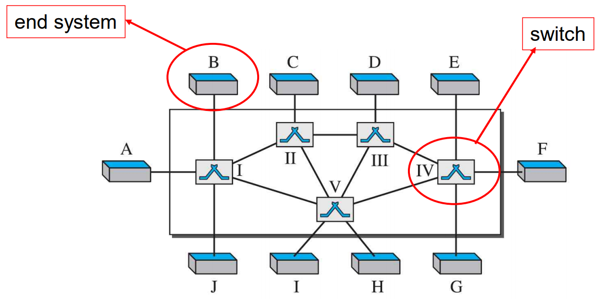
교환 방법 종류¶
- 회선 교환(Circuit Switching)
- 패킷 교환(Packet Switching)
- 메세지 교환(Message Switching)
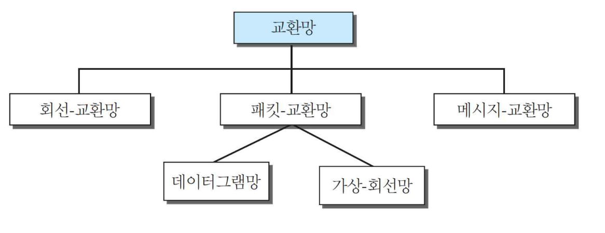
TCP/IP 계층에서의 교환¶
| 계층 | 영문 | 교환 방식 | 비고 |
|---|---|---|---|
| 물리 층 | Physical Layer | 회선 교환 | . |
| 데이터 링크 층 | Data Link Layer | 패킷 교환 (가상 회선 접근 방식) |
프레임(Frame) OR 셀(Cell) |
| 네트워크 층 | Network Layer | 패킷 교환 (가상 회선 접근 방식, 데이터그램 접근 방식 |
. |
| 응용 층 | Application Layer | 메세지 교환 | . |
1절. 회선 교환망¶
회선 교환망(Circuit-Switched Networks)¶
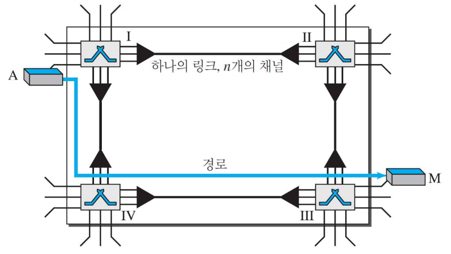
각 링크를 n개 채널로 나누는 물리적 링크에 의해 연결된 교환기 집합
- 물리 링크로의 연결
- 단일 교환기
- 두 지국 간 연결 : 1개 이상의 링크로 만들어진 전용 경로
- 연결 : 각 링크 중 하나의 전용 채널만 사용
- 링크 : FDM OR TDM 방식으로 n개의 채널로의 분할
- 전통적인 전화망의 물리층 교환 방식
회선 교환망 단계 별 작업¶
| 단계 종류 | 작업 |
|---|---|
| 연결 설정 단계 | 자원 할당 필요 |
| ~ 연결 해제 단계 | 전체 데이터 전송 기간 동안 전용적 자원 할당 |
회선 교환망 스위치 I/O¶
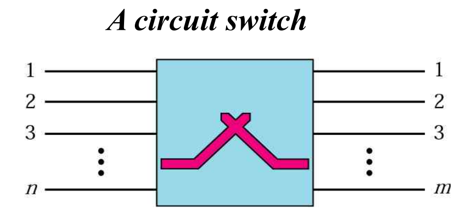
- 회로 스위치
- 연결을 생성하는 n개의 Input
- m개의 Output
- Input 수와 Output 수가 항상 동일하지는 않음
접이식 스위치 I/O¶
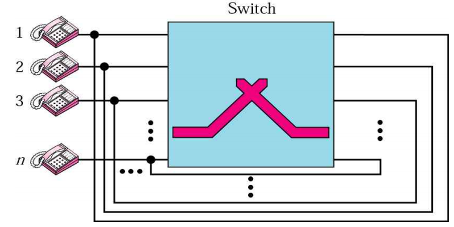
- n × n 접이식(Folded) 스위치
- 전이중(Full-Duplex) 모드
- n개의 각 전화기는 다른 모든 전화기에 연결 가능
연결 단계¶
| 단계 종류 | 영문 | 설명 |
|---|---|---|
| 연결 설정 단계 | Setup Phase | 교환기 사이 전용 회선 생성 |
| 데이터 전송 단계 | Data Transfer Phase | 두 당사자 간 데이터 전달 |
| 연결 해제 단계 | Teardown Phase | 당사자 중 하나가 연결 끊기를 원하면 자원 해제 |
단계 별 예시¶
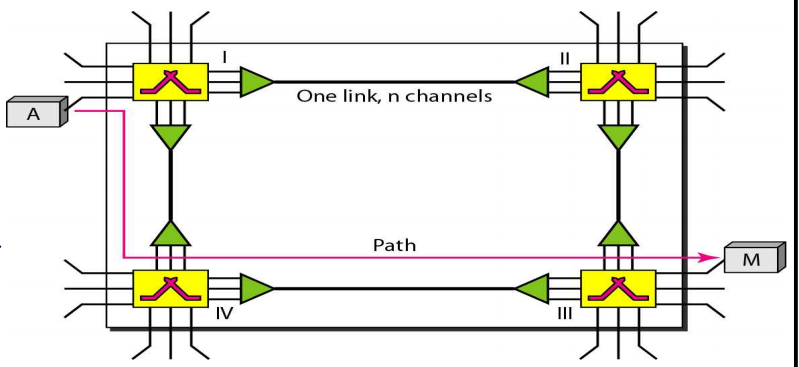
-
연결 설정 단계(Setup Phase)
-
스위치 간 전용 채널 생성
- ex) A -> I에게 채널 요청 -> IV로 연결 III으로 연결 -> M은 연결 받은 후 A에게 Acknowledge 전송
-
데이터 전송 단계(Data Transfer Phase)
-
전송 채널로 데이터 전송
-
연결 해제 단계(Teardown Phase)
- 연결 끊을 경우 각 스위치에게 신호를 보내서 Disconnect
효율(Efficiency)¶
- 데이터 전송 기간 동안 지속적인 자원 할당
- 안좋은 효율
| 전송 상황 경우 | 상황 |
|---|---|
| 전화의 경우 | 통화가 끝날 때까지 계속 연결 |
| 데이터의 경우 | 지속적인 연결 필요 X |
지연(Delay)¶
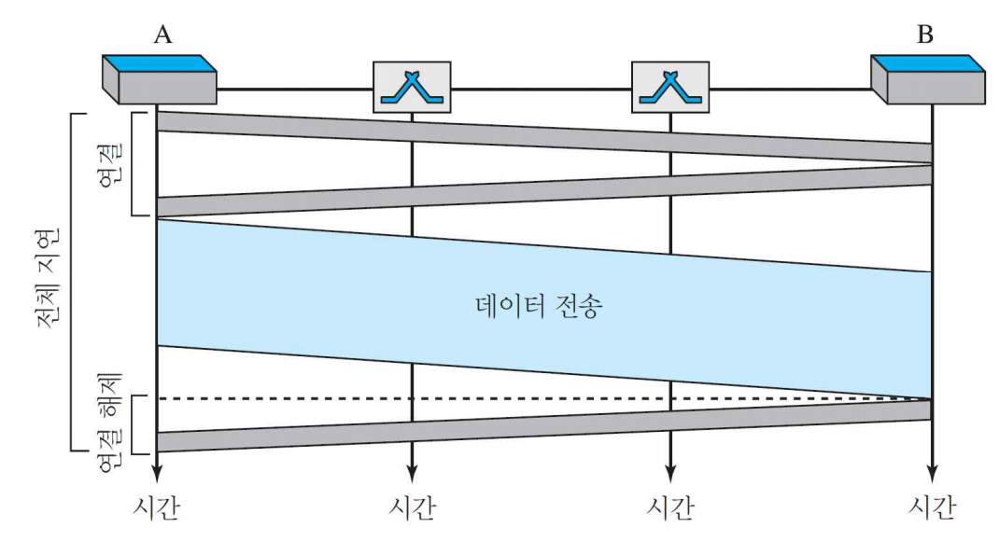
- 데이터 전송 기간 에는 적은 지연
- 연결 설정 단계
-
- src로부터 전파 시간
-
- 요청 신호 전송 시간
-
- 확인 응답 전파 시간
-
- 확인 응답 전송 시간
- 데이터 전송 단계
-
- 전파 시간
-
- 데이터 전송 시간
- 연결 해제 단계
2절. 패킷 교환¶
패킷 교환망(Packet Switching)¶
- 패킷
- 고정 or 가변 길이로 분할
- 길이 : 네트워크와 해당 프로토콜에 의해 결정
| 유형 |
|---|
| 데이터그램 망 |
| 가상 회선 망 |
데이터그램 망¶
- 4개의 교환기(라우터)를 이용한 데이터그램 망 형태
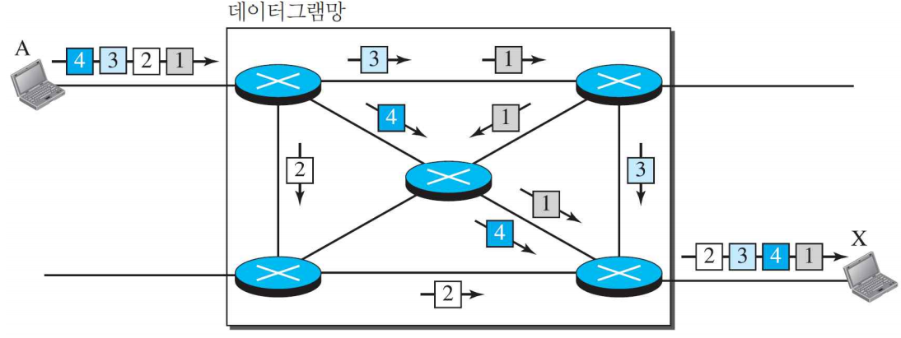
- 인터넷(Internet)에서의 교환
- 네트워크 층에서 패킷을 교환하는 데이터그램 방식
- 각 패킷은 다른 패킷과 무관한 취급
- 네트워크 층에서 작업
- 비연결형 망(Connectionless Networks)
- 교환기 : 라우터(Router)
경로지정 표(Routing Table)¶
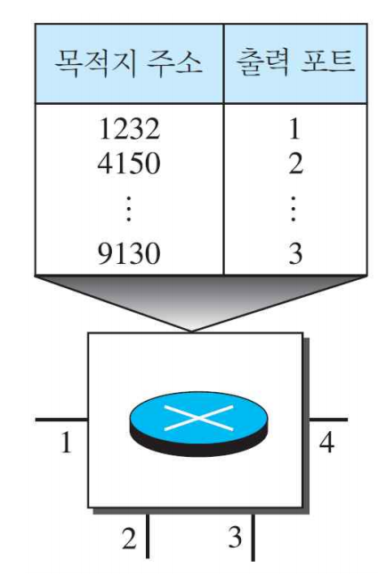
- 각 교환기는 목적지(des) 주소 기반 경로지정 표 보유
- 목적지 주소, 출력 포트 존재
- 각 패킷 헤더에 목적지 주소 존재
- 목적지에 도달할 때까지 불변
효율(Efficiency)¶
- 회선 교환망보다 좋은 효율
- 패킷 전달 때까지 resource 할당
지연(Delay)¶
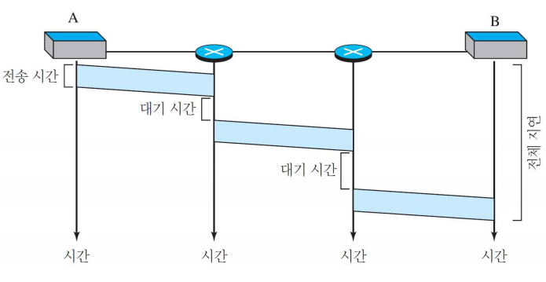
- 가상 회선망보다 큰 지연
- 연결 설정/해제 단계 없음
- 각 패킷은 전달되기 전 대기시간 존재
-
각 패킷은 전달 경로가 상이하기 때문에 동일한 교환기를 통과하지 않고 일정하지 않은 지연
-
전체 지연 시간 = 3T(전송 시간) + 3τ(전파 지연 시간) + \(w_1\) + \(w_2\)(대기 시간)
가상 회선 망(Virtual-Circuit Network)¶
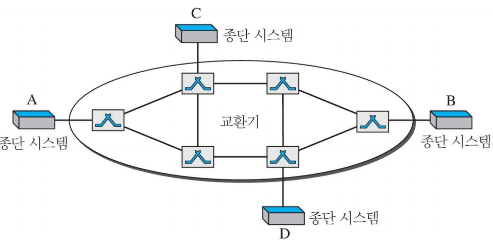
- 회선 교환망 + 데이터그램 망
- 양자의 특성 모두 보유
- 같은 발신지(src)와 목적지(des)인 경우 동일한 경로로 전송
- 한정된 자원에 대해 서로 다른 지연으로 목적지에 도착할 가능성 존재
- 교환형 WAN에서 링크 계층 교환 시 사용하는 가상 회선 기술
특성¶
- 연결 설정/해제 단계 존재
- 자원이 설정 단계에서 할당 or 필요에 의해 할당
- 데이터는 패킷으로 전송
- 각 패킷은 헤더에 Local 주소 존재(End-to-End Address가 아님)
- Local 주소 : 어느 스위치로 교환되고 그 스위치에서 어느 채널로 가는지
- 연결 설정 후 패킷은 같은 경로로 전송
- 데이터 링크 층에서 구현
- 회선 교환 망 : 물리 층
- 데이터그램 망 : 네트워크 층
주소 지정¶
-
전역 주소(Global Address)
-
네트워크 전역에서 통용되는 주소
- 가상 회선 식별자 생성 시 필요
- source address
- destination address
-
지역 주소(Local Address)
-
가상 회선 식별자(VCI : Virtual Circuit Identifier)
- 교환기에서 사용되는 주소
- 프레임에서 사용
- 데이터 전송에 필요한 식별자
- 프레임이 스위치를 통과하며 VCI 변환
- 일반적으로 작은 수
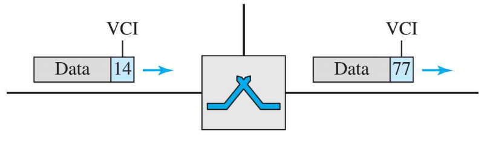
연결 단계¶
-
연결 설정 단계(Setup Phase)
-
전역 주소로 src와 des 간 연결을 위해 table 생성
-
데이터 전송 단계(Data Transfer Phase)
-
데이터 전송
-
연결 해제 단계(Teardown Phase)
-
src와 des는 스위치들에 해당 정보 삭제 요청
가상 회선 망 경로 지정 표¶
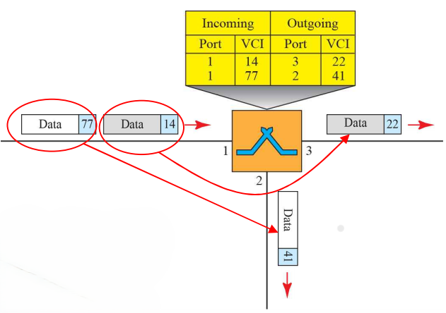
- 가상 회선 생성 시 모든 스위치는 4개의 열을 갖는 표 생성
- 표에 의해 Frame 전달
가상 회선 망 데이터 전송¶
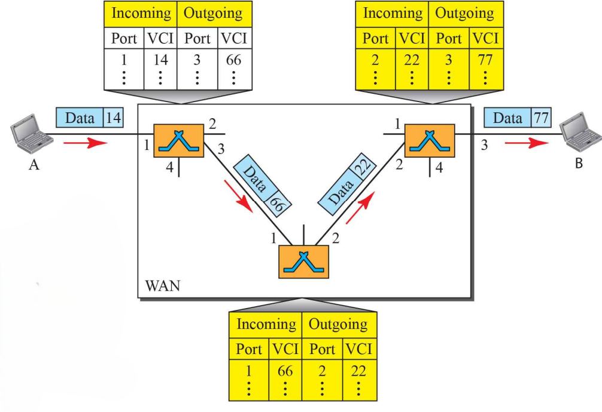
- src의 모든 Frame이 des에 전달될 때까지 동일하게 전달
- 가상 회로(Virtual Circuit) 생성
연결 설정 단계(Setup Phase)¶
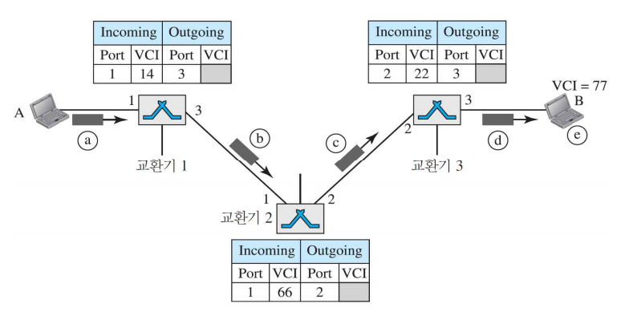
- 연결 설정 요청(Setup Request)
- src A가 스위치 1로 setup Frame 전송
- 스위치 1은 전송받은 Frame을 port3으로 전송 후 table의 3 항목 작성(Outgoing VCI는 Acknowledge step 시 작성)
- Incoming port / VCI
- Outgoing port
- 스위치 2, 스위치 3은 setup Frame 수신 후 스위치 1과 동일 작업
- des B는 setup Frame 수신 후 VCI 할당
- 할당된 VCI를 통해 A에서 오는 메시지 여부 판단
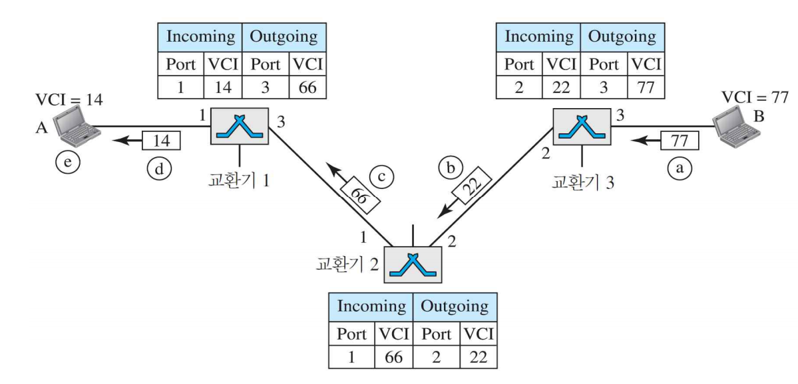
-
연결 설정 확인 응답(Setup Phase Acknowledgement)
-
des는 Acknowledgement Frame을 스위치 3에 전송
- Frame은 전역 src/des 주소를 가지며 Setup Request 시 할당한 VCI 보유
- 스위치 3은 Incomming VCI를 가진 Acknowledgement Frame을 스위치 2에 전송
- 스위치 2, 스위치 1은 동일한 작업으로 Acknowledgement Frame 전송
- src는 des B로 전송하는 Data Frame에 VCI를 사용해서 전송
데이터 전송 단계(Data Transfer Phase)¶
- 가상 회선 망의 교환기와 표 존재
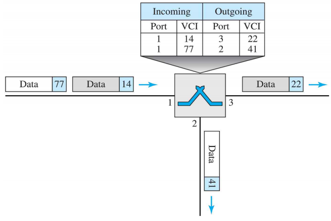
- src to des 데이터 전송
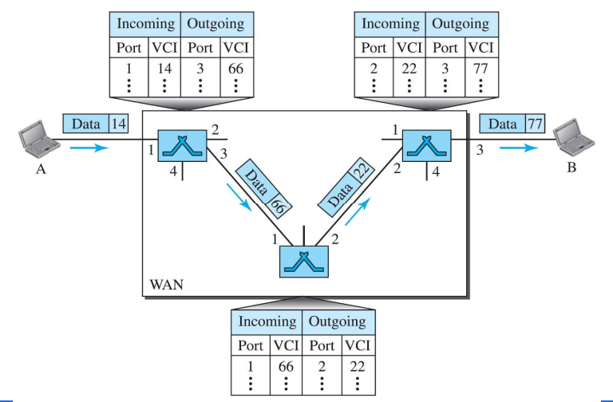
연결 해제 단계(Teardown Phase)¶
- 모든 데이터 전송 후 src A는 연결 해제 요청(Teardown Request) Frame을 전송
- des B는 확인(Confirmation) Frame을 전송하며 응답
- 모든 스위치는 해당 내용을 테이블에서 삭제
지연(Delay)¶
- 전체 지연 = 3T + 3τ + setup delay + teardown delay
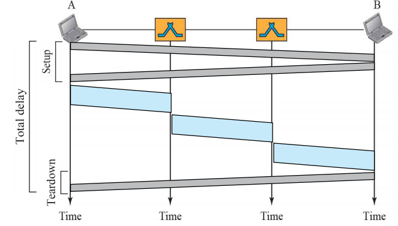
- Setup 시 1회 지연 발생
- Teardown 시 1회 지연 발생
- 각 패킷의 대기 시간(Wait Time)은 없음
3절. 교환기 구조¶
회선 교환기 구조¶
- 회선 교환, 패킷 교환 시 교환기 사용
| 종류 |
|---|
| 공간 분할(Space Division) 교환기 |
| 시 분할(Time Division) 교환기 |
| 공간 분할 교환기 + 시 분할 교환기 결합 |
회선 교환기 유형¶
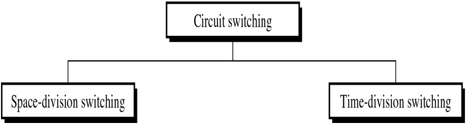
공간 분할(Space Division) 교환¶
- 회선에서 경로는 다른 것들과 공간적으로 분리
크로스바(Crossbar) 교환¶
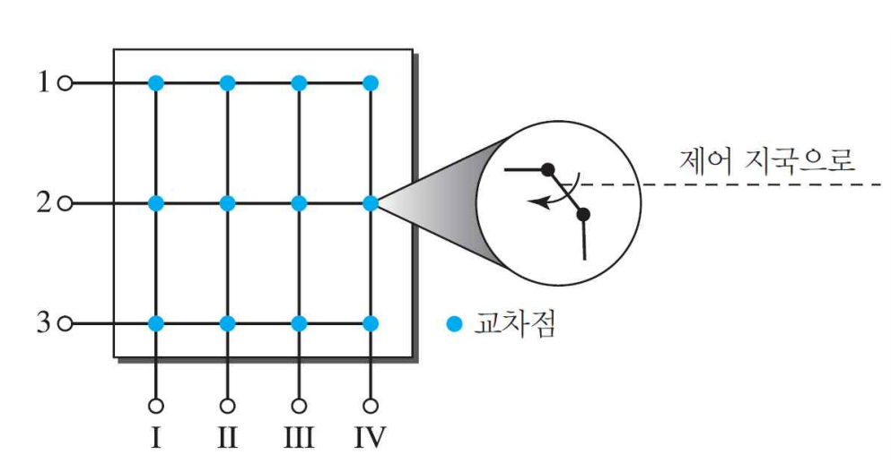
- 각 교차점 상의 전기 마이크로 스위치(Transistor : 트랜지스터) 존재
- n 입력과 m 출력 연결을 위해 n × m 개의 교차점 요구
- 낮은 효율(25% 사용)
다단계(Multistage) 교환기¶
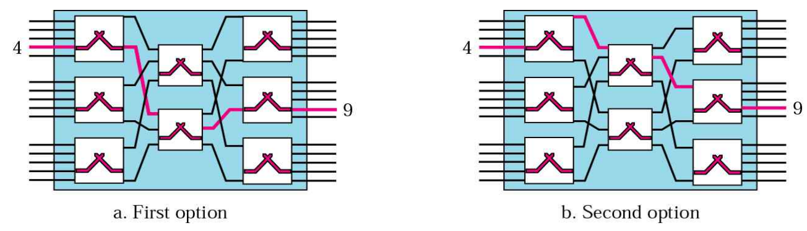
- 장치는 교환기에 연결되고 이 교환기는 차례로 다른 교환기에 계층적 연결
- 가운데 스테이지에 있는 교환기가 처음과 마지막 교환기보다 적은 수의 스위치 보유
- 한 쌍의 장비를 연결하는 여러 가지 경우의 수 존재
블로킹(Blocking)¶
- 다단계 교환기에서 Heavy Traffic일 경우 발생
- Single Stage에서는 발생 X
- 첫 번째 Stage에서 5개의 입력 중 2개만 사용 가능
- 즉, Stage 사용률이 증가할 수록 블로킹(Blocking) 확률 증가
- 실제로는 line 간 교환 수가 통계적 분석(Statistical Analysis)에 의해 Blocking이 발생하지 않을 정도로 조절
3단계 교환기¶
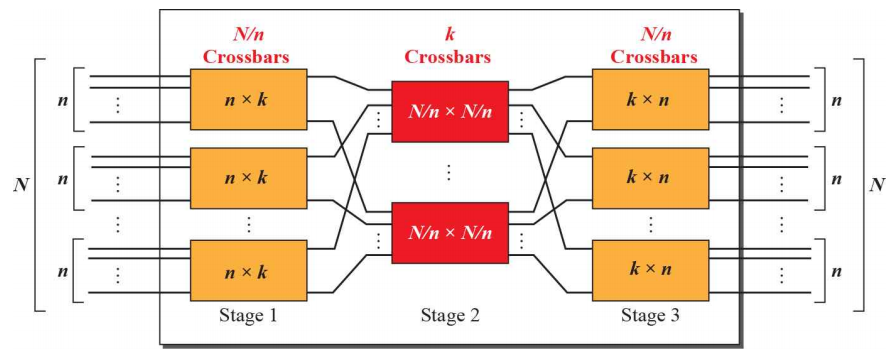
- 전체 교차점 개수 : \(2kN + k(\frac{N}{n})^2\)
- 단일 교환기에서 필요한 (\(N^2\))보다 훨씬 적은 수
- Clos 조건
- \(n = (\frac{N}{2})^{\frac{1}{2}}\)
- \(k > 2n - 1\)
- 교차점(CrossPoints) \(>= 4N |(2N)^{\frac{1}{2}} - 1|\)
시 분할(Time Division) 교환¶
-
TDM과 TSI를 통해 확립
-
TDM(Time-Division Multiplexing)
- TSI(Time-Slot Interchange) : 요구되는 연결 기반 틈새 번호 변경
시간-분할 다중화¶
- 시간 간격 교환 유무에 따른 시분할 다중화
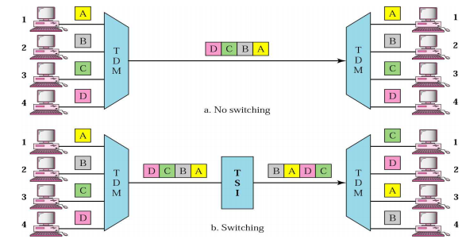
시간 틈새 상호 교환(TSI : Time-Slot Interchange)¶
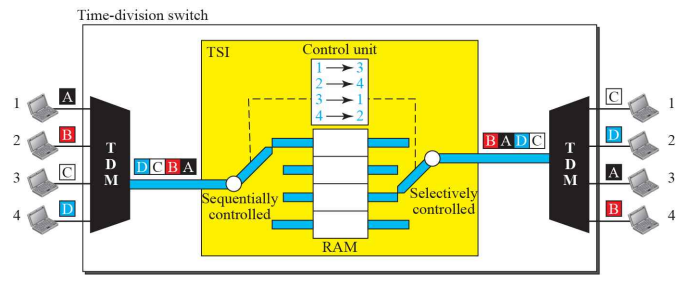
- 각 location RAM 크기는 Single Time Slot Size와 동일
- Location 수는 Input 수와 동일
- 일반적으로 I/O 수는 동일
- Time-Slot은 받아들인 순서로 memory를 채우고 control unit의 결정 순서대로 전송
공간 분할 + 시분할 교환 결헙¶
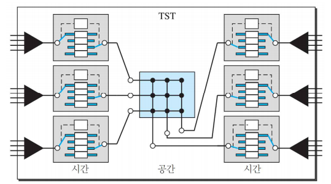
- 12 × 12 I/O를 3개의 그룹으로 나눠 사용
- Time-Division : 지연을 1/3으로 줄임
- Space-Division : 연결성 증가
패킷 교환기 구성 요소¶
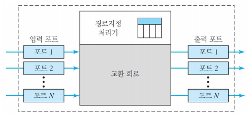
입력 포트(Input Port)¶
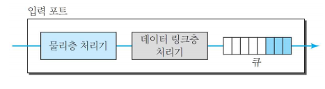
- 패킷 교환 물리 및 데이터 링크 기능
- 수신된 신호로부터 비트 형성
- 프레임으로부터 디캡슐화
- 헤더 및 트레일러 정보 제거
- 오류 감지 및 수정
- 스위칭 패브랙(Switching Fabric)으로 데이터를 전달하기 전 일시적으로 데이터를 저장하는 버퍼(큐 : Queue) 존재
출력 포트(Output Port)¶
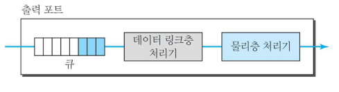
- 순서만 반대일 뿐 입력 포트와 같은 기능
- 출력 패킷들이 큐에 저장
- 프레임에서 패킷 캡슐화
- 물리 계층 기능
- 프레임의 데이터를 신호로 변환 후 전송
경로 지정 처리기(Routing Processor)¶
- 네트워크(3계층 : Network Layer) 층 기능 수행
- 다음 hop으로 갈 주소를 목적지 주소를 통해 탐색
- 표 보기(table lookup)
교환 회로(Switching Fabric)¶
- 입력 큐의 패킷을 출력 큐에 옮기는 작업
- Switch에서 가장 어려운 작업
- 스위치 예시
- 크로스바 교환기
- 반얀 교환기(Banyan switch)
- 뱃처-반얀 교환기(Batcher-Banyan Switch)
반얀 교환기(Banyan Switch)¶
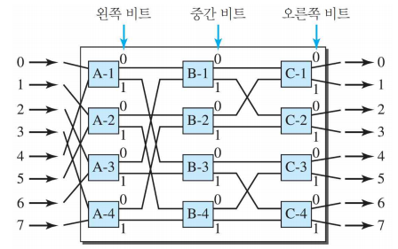
- n input, n output인 경우
- \(log_2n\) stage와 각 stage에서 n/2개의 microswitch 존재
- 첫 번째 stage에서 최상위 bit로 라우팅
- 다음 stage에서 다음 상위 bit로 라우팅
반얀 교환기 경로 탐색 예시¶
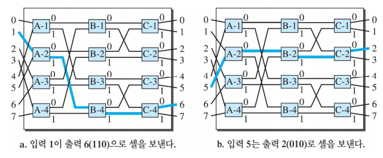
뱃처-반얀 교환기(Batcher-Banyan Switch)¶
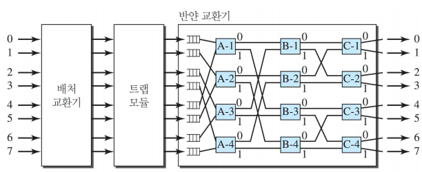
- Banyan switch의 단점
- 두 개의 packet이 충돌하는 경우 존재
-
Batcher switch에서 미리 목적지 port에 따라 정렬 진행
-
충돌 방지
-
트랩 모듈
- 동일한 destination을 가진 packet이 동시에 banyan switch로 못가도록 방지